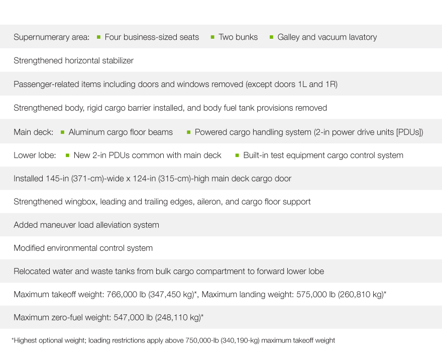
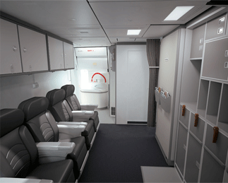
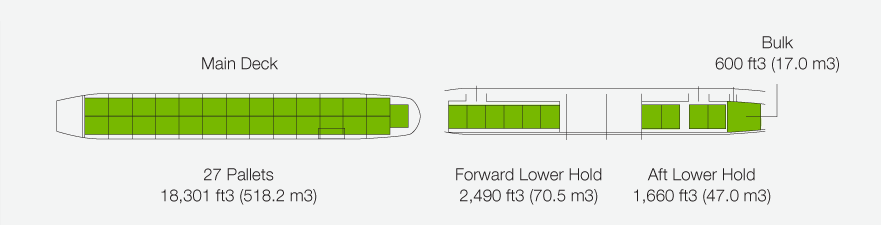
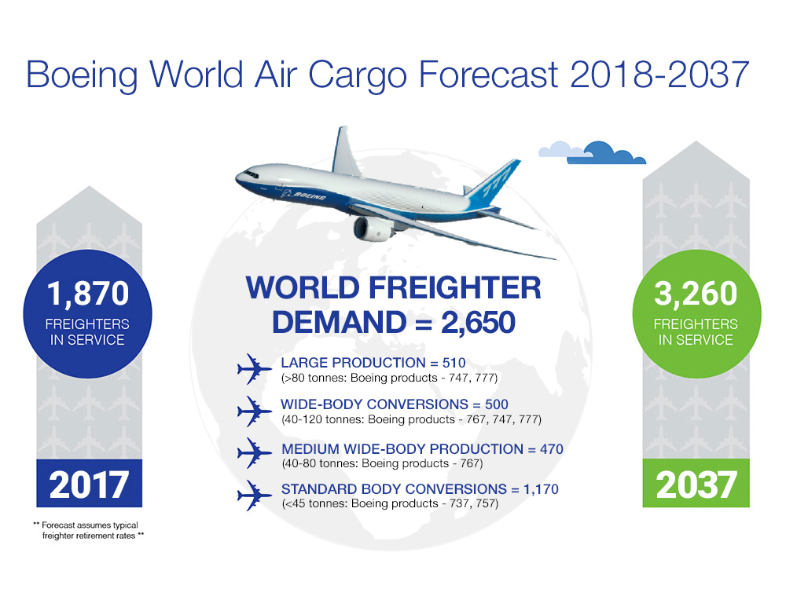

The range capability of the 777F provides significant savings for cargo operators.
It enables them to take advantage of fewer stops and associated landing fees,
less congestion at transfer hubs,
lower cargo handling costs, and shorter cargo delivery times.
The new freighter also integrates smoothly with existing cargo operations and facilitates
interlining with 747 freighter fleets.
The 777F is Boeing's response to strong demand from cargo operators around the world
for an efficient, long-range, and high-capacity freighter. By providing more capacity than
any other twin-engine freighter, the 777F brings new levels of efficiency to long-haul markets.
At the same time, its similarity to previous 777 models and ability to facilitate direct-transfer
shipments with 747 freighter fleets make it easy to integrate into an operator's fleet.
UNIQUE FREIGHTER CAPABILITIES
The 777F has been specifically designed as a freighter,
with additional strengthening in key structural areas, including:
New monolithic aluminum floor beams.
Rigid cargo barrier located in the forward section of the airplane.
Strengthened fuselage, especially in the area of the main deck cargo door.
The airplane's design reflects information and feedback that Boeing gained at freighter
working group meetings held with 20 airlines and cargo operators.
Boeing's plan was to ensure that the 777F would operate with procedures and handling
similar to other 777 variants. The result is a common type rating with 777 passenger
airplanes and only minimal transition required and lower training costs.
 Figure.1: Changes in the 777F compared to the 777-200LR

Figure.2:The supernumerary area includes business-class seats forward of door 1.
TWIN-ENGINE FREIGHTER RANGE
With a maximum takeoff weight of 766,000 pounds (347,450 kilograms), the 777F has a revenue
payload capability of more than 226,000 pounds (102.8 metric tons). It can fly 4,880 nautical
miles (9,038 kilometers) with a full payload at general cargo market densities (more than
10 pounds per cubic foot), making it the world’s longest-range twin-engine freighter
The airplane has been engineered to have essentially the same landing characteristics as
the 777-200LR (Longer Range), despite a maximum landing weight that is nearly 17 percent
heavier (575,000 pounds; 260,810 kilograms).
The 777F accommodates 27 standard pallets (96 by 125 inches; 2.5 by 3.1 meters) on the main deck.
The industry-standard 10-foot-high (3-meter-high) pallets are accommodated by the large
main deck cargo door. The lower cargo hold has the capacity for 10 pallets, as well as
600 cubic feet (17.0 cubic meters) of additional bulk cargo
Figure.3:Longest-range twin-engine freighter

Figure.4:777F Flexible cargo configuration
UNIQUE ECONOMICS OF THE 777F
The 777 family has an established history of twin-engine efficiency, with lower fuel
consumption, maintenance costs, and operating costs.
The 777F extends these advantages to cargo operators, giving them the lowest trip cost
of any large freighter, as well as excellent ton-mile economics. The freighter is expected
to offer a 17 to 28 percent fuel-per-ton advantage to other freighters. The 777F has range,
payload, and operating economics superior to any existing airplane freighter.
Its fuel economy also provides environmental benefits because lower fuel consumption means
lower carbon emissions. The 777F also meets London-Heathrow noise standards (QC2) for
maximum accessibility to noise-sensitive airports.
The high commonality of 777F airplane systems - such as flight controls, hydraulics, and
landing gear - with 777 passenger airplane systems takes advantage of existing maintenance
infrastructure (i.e., parts, ground support equipment, task cards, training) at the airline
operator.

Figure.5:Excpected rising demand of the 777F
777F OPERATORS
Below is a list of the major operators ordered in order of number of currently operational
777F: